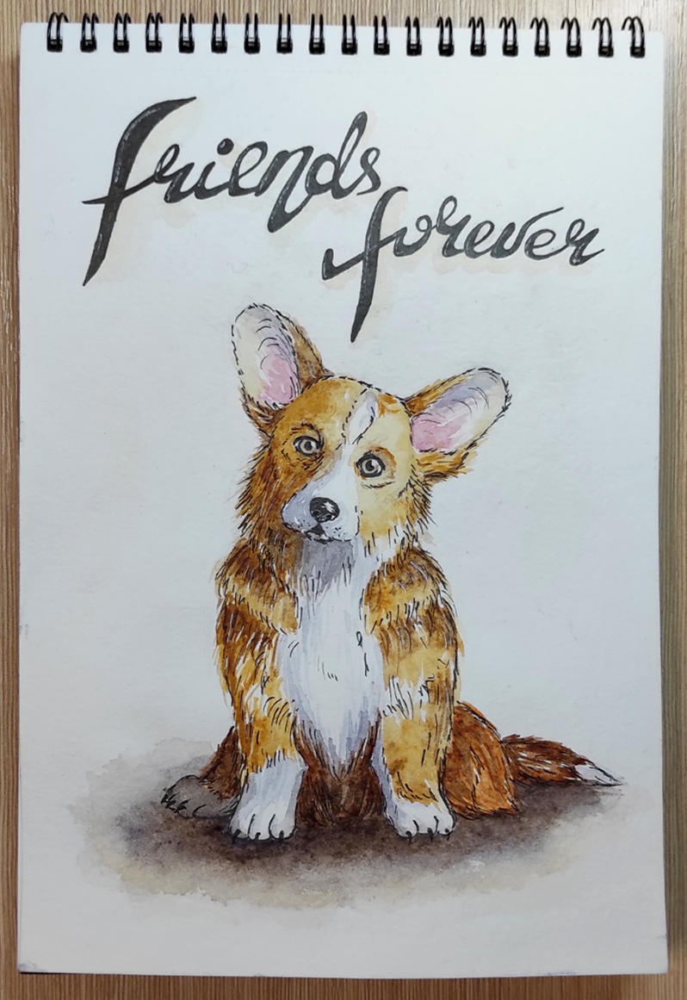

На этом сайте я расскажу о моем опыте и впечатлениях обучения в различных арт школах.
Арт школы
Возьми кисть
Возьми кисть — московская школа рисования, имеющая удобное расположение в центре Москвы - у метро Курская.
Я проходил курс "Основы рисования" весной/летом 2020 года. Все преподаватели были отзывчивыми и готовыми помочь в любой ситуации. За весь курс мы прошли основы рисунка карандашем, основы акварельной, акриловой и масляной живописи, а также немного разобрали рисование человека с натуры.
Однако, у школы был небольшой минус - недостаток менеджеров, которые должны следить за сохранностью и расоложение картин по окончанию занятий, из-за чего иногда в начале урока приходилось долго искать свою работу.
На их сайте можно найти информацию обо всех очных и онлайн курсах школы, а также получить консультацию у менеджеров.
Мои работы, сделанные во время обучения в школе "Возьми кисть".
Всем Арт
Всем Арт — онлайн школа скетчинга.
Преподаватель пошагово объясняет как рисовать каждую работу. Тематика уроков обширная от рисования в графике до акварельных скетчей архитектуры и людей. Уроки не знанимают много времени, обычно 1 урок — 1 час в записи, поэтому урок можно смотреть и выполнять где и когда угодно. Также неотъемлемой частью курса является проверка заданий, которая проходит в кратчайшие сроки.
Первое знакомство со школой состоялось на бесплатных вебинарах, на которых каждый желающий может подключиться и в прямом эфире нарисовать простой, но красочный скетч, даже если это его первая работа и нет специализированных материалов.
Собственного сайта у школы на данный момент нет, но они есть почти во всех соцсетях: vk, instagram, youtube и т.д.

Мои работы, сделанные во время обучения в школе "Всем Арт".
Pixel
Pixel — онлайн школо digital рисования
В этой школе обучают навыкам работы м растровыми и векторными редакторами, такими как Photoshop и Illustrator. Курсы подходят как для начинающих, так и для тех, кто хочет поднять свой уровень рисования, потому что на каждом уроке домашнее задание творческое — нужно рисовать свою идею, а не повторять за автором. Курсы помогают не только овладеть инструментом, но начать творчески мыслить и создавать идеи.
На их сайте можно найти информацию о курсах и посмотреть работы учеников
Мои работы, сделанные во время обучения в школе "Pixel".